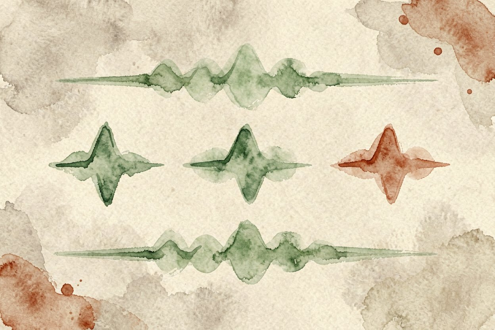
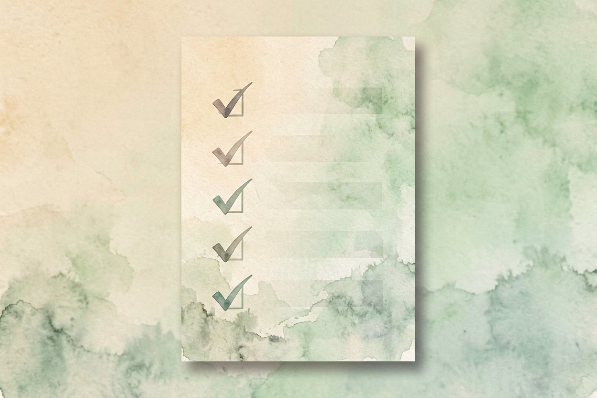

AI 视频配音教程：用文字转语音做旁白解说
不想自己录音也能加旁白？用 AI 视频配音，把稿子丢进文字转语音，几分钟拿到一段干净解说。
AI 视频配音是本文的核心主题，下面详细介绍如何使用。
AI 视频配音是什么：把文字变成旁白
AI 视频配音，就是把写好的稿子交给文字转语音模型，生成一段真人感的解说音轨。你不用麦克风、不用录很多遍，改稿比改录音省事太多。它和AI 文字转语音原理是同一件事，这里侧重怎么接到视频里。
配音分两类。普通 TTS 用平台自带音色，开箱即用。声音克隆拿你几秒样本复刻你的声线，适合做个人品牌，但涉及肖像权要谨慎。新手先用自带音色跑通，再考虑要不要克隆。克隆前先看清平台授权范围，商用和公开传播往往要单独许可。
选音色前先想清楚受众

先定听众和调性。知识科普要稳重，带货要热情，儿童内容要轻快。大多数平台提供几十种音色，试听三段再定，别凭名字猜。音色定错，整条视频气质就歪了。同一音色在不同平台质感不同，正式发布前在目标平台试听。
语速也先选。中文解说一点一到一点三倍速最舒服，太快显急、太慢显拖。定好音色和语速，整条视频才统一。系列视频锁定同一音色，观众才认得出是你，别每期换声线。
用 TTS 生成第一段解说
把稿子拆成短句再生成，比一整篇喂进去更稳。每段别超过二十字，断句自然，模型不容易读破。下面这种分段最省事，也方便后期逐段对齐画面：
配音稿示例（分段，每段一句）：
第一段：今天聊聊怎么用 AI 给视频加旁白。
第二段：先把稿子拆短句，每段别超过二十字。
第三段：生成后拖进剪辑软件对齐画面。生成后逐段试听，破音或吞字的那段重写，别整段重来。同一段生成两版，挑断句更顺的那版。长稿分段生成还能并行，比一次出整篇快。
让语速和停顿更自然
平淡是机器音的通病。加一点标点控制停顿，逗号短顿、句号长顿。需要强调的词前面加逗号，模型会轻微重读。问句结尾用问号，语气才上扬，陈述句别乱加。长句中间插空格也能制造停顿，比硬加标点自然。
多音色拼接更生动。开头用沉稳音，举例子切轻松音，结尾回沉稳。和AI 播客制作一样，靠分段与音色变化掩盖机械感。不同段落用不同音色要有逻辑，别为了变而变，听感会乱。
关于AI 视频配音，别用 cloned 声音冒充他人或商用未授权内容。AI 视频配音是效率工具不是替身，关键口播仍建议你本人出镜更可信。导出格式选无损或高码率，二次剪辑不损音质。别把生成音轨直接当终版，过一遍耳再上线。

AI 视频配音的最佳实践见上文详细步骤，别错过核心要点。
本文信息核对于 2026-08-24。AI 产品的价格、免费额度与功能变动频繁，实际以各工具官网当前说明为准。